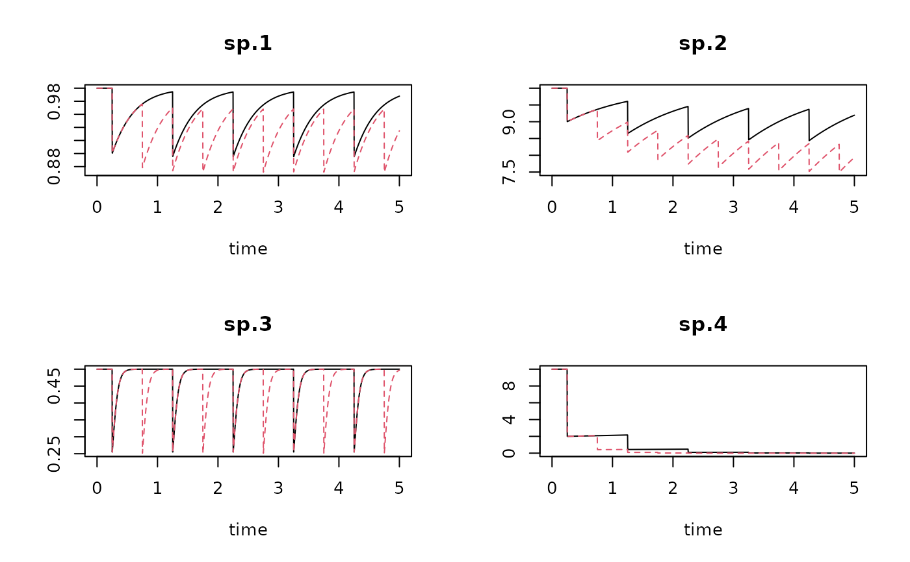
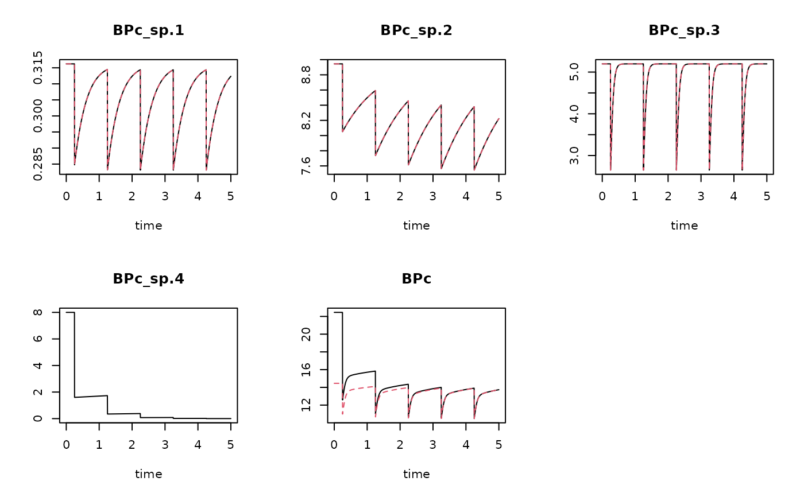
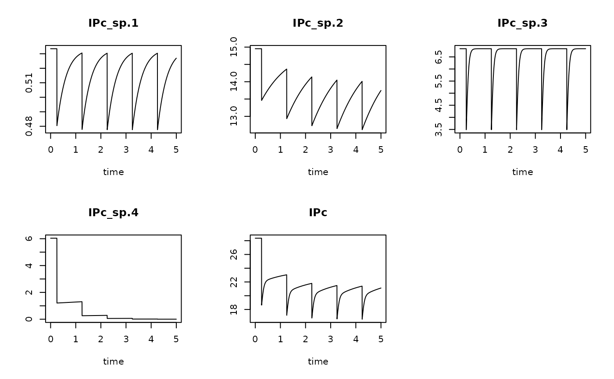

From model output (time x taxon density) to time x bioturbation or time x bioirrigation potentials.
getDbModel.Rdget_Db_model and get_irr_model combine output of a biological model that describes how taxa evolve with time with a trait database to obtain how bioturbation and bioirrigation potentials evolve over time. They estimate the bioturbation potential index (BPc) sensu Querios et al., 2013 and Solan et al., 2004, and the bioirrigation potential index (IPc) sensu Wrede et al., 2018, respectively.
Usage
get_Db_model(model, trait = Btrait::Traits_Db,
taxon_names = colnames(model)[-1], taxonomy = NULL,
weight, verbose = FALSE, na.rm = FALSE)
get_irr_model(model, trait = Btrait::Traits_irr,
taxon_names = colnames(model)[-1], taxonomy = NULL,
weight, verbose = FALSE, na.rm = FALSE)Arguments
- model
dynamic model output that describes how taxa change over time. This is a matrix with (time x taxon) information, such as generated from the function run_perturb or
density+perturb. The first column should contain the time, and the other columns the taxon density trajectories over time, with the column names the taxon names, if not intaxon.name. (see note for the taxon names)- taxon_names
names of the taxa, one for each column in
model, except the first column. A vector of length = ncol(model) - 1. These names will be matched with the trait database, and optionally withweightif this is a two-columned matrix/data.frame.- trait
(taxon x trait) data. For
get_Db_model,traitsshould contain the columnsRiandMi(with the reworking and mobility traits). For use inget_irr_model,traitsshould contain columnsBTandFT, andID, the burrowing type, feeding type, and injection depth respectively. The trait matrix should have the names of the taxa in its first column. A good choice of a trait database for estimating bioturbation potentials is Traits_Db; a good choice for estimating bioirrigation potentials is Traits_irr.- verbose
when TRUE, will write warnings to the screen.
- na.rm
when TRUE, will remove species for which trait could not be estimated (as not present in the trait database).
- taxonomy
taxonomic information; first column will be matched with
taxon, regardless of its name.- weight
either a vector with a value for each trajectory in model (and with length = ncol(model) - 1), or a
data.framewith taxon (first column) versus weight (2nd column) characteristics for each taxon in themodel.
Value
get_Db_model returns the time x Db-index matrix of class deSolve. Both the bioturbation index for each taxon ("BPC_taxon.."), and the summed index is returned ("BPc").
get_irr_model returns the time x Irr-index density matrix of class deSolve. Both the irrigation index for each taxon ("IPC_taxon.."), and the summed index is returned ("IPc").
The result has in its attributes a vector called "Factor", which is the constant factor with which the model output has been multiplied; for get_Db_model, this is estimated as sqrt(weight)*Mi*Ri; for get_irr_model, this is estimated as (weight)^0.75*FT*BT*ID.
Note
*** About taxon names ****
The names of the columns in model should have the taxon names, that are also found in the trait database. This can create a problem if the model output is a data.frame and the taxon names contain blancs. In this case, the names will have "." rather than " ".
This can be solved by either
(1) by making the names in the trait database consistent with the model output (use R-function
make.names()to convert names with spaces to good names, as used in data.frames), or(2) by specifying the true names in argument
taxon_namesthat has the actual taxon names (in the order of the columns).
*** Formulae ****
get_Db_model: The formula for estimating the bioturbation Index for taxon i (as in Querios et al., 2013) is:
BPc_i = sqrt(Wi) * density_i * Ri*Wi
get_irr_model: The formula for estimating the bioirrigation Index for taxon i (as in Wrede et al., 2018) is:
IPc_i = (Wi)^(0.75) * density_i * BTi*FTi*IDi
The stations Index is the sum of all species indices.
See also
run_perturb for the disturbance model.
get_trait_model for deriving functional traits from a perturbation or logistic model.
Traits_Db, for trait databases in packge Btrait..
get_trait_density, for the function on which get_trait_model is based.
get_trait for functions from package Btrait to extract traits
References
Queiros, Ana M., Silvana N. R. Birchenough, Julie Bremner, Jasmin A. Godbold, Ruth E. Parker, Alicia Romero-Ramirez, Henning Reiss, Martin Solan, Paul J. Somerfield, Carl Van Colen, Gert Van Hoey, Stephen Widdicombe, 2013. A bioturbation classification of European marine infaunal invertebrates. Ecology and Evolution 3 (11), 3958-3985
Solan M, Cardinale BJ, Downing AL, Engelhardt KAM, Ruesink JL, Srivastava DS. 2004. Extinction and ecosystem function in the marine benthos. Science 306:1177-80.
A. Wrede, J.Beermann, J.Dannheim, L.Gutow, T.Brey, 2018. Organism functional traits and ecosystem supporting services - A novel approach to predict bioirrigation. Ecological indicators, 91, 737-743.
Examples
## ====================================================
## A small model
## ====================================================
Trawl.pars <- data.frame(
taxon = c("sp.1","sp.2","sp.3","sp.4"), # name of taxa
r = c( 3, 1, 20, 0.1), # rate of increase (/year)
K = c( 1, 10, 0.5, 10 ), # carrying capacity (density or biomass)
d = c( 0.1, 0.1, 0.5, 0.8)) # instantaneous depletion
# run the model for 5 years
times <- seq(0, 5, by=1/365) # time in years (consistent with pars)
# trawling frequency once / twice per year
trawl1 <- seq(from=1/4, by=1, to=5)
trawl2 <- seq(from=1/4, by=0.5, to=5)
# run the model
trawl1run <- run_perturb (parms = Trawl.pars,
times = times,
events = trawl1)
trawl2run <- run_perturb (parms = Trawl.pars,
times = times,
events = trawl2)
plot(trawl1run, trawl2run)

##-----------------------------------------------------
## Small dataset: taxonomy
##-----------------------------------------------------
Btaxonomy <- data.frame(
species = c("sp.1","sp.2","sp.3","sp.4","sp.5","sp.6"),
genus = c( "g.1", "g.2", "g.2", "g.2", "g.3", "g.4"),
family = c( "f.1", "f.1", "f.1", "f.1", "f.2", "f.3"),
order = c( "o.1", "o.1", "o.1", "o.1", "o.2", "o.2"),
class = c( "c.1", "c.1", "c.1", "c.1", "c.1", "c.1")
)
##-----------------------------------------------------
## Db and Irr traits
##-----------------------------------------------------
# Note: no data for "sp.4"
DbTraits <- data.frame(
taxon = c("sp.1","sp.2","sp.3","sp.5","sp.6"),
Ri = c(1 , 1 , 3 , 2 , 4),
Mi = c(1 , 2 , 2 , 3 , 3)
)
IrrTraits <- data.frame(
taxon = c("sp.1","sp.2","sp.3","sp.5","sp.6"),
BT = c(1 , 1 , 3 , 2 , 3),
FT = c(3 , 2.5 , 2 , 3 , 2),
ID = c(1 , 2 , 1 , 3 , 2)
)
# Weight of the species - it is assumed this does not change over time
Weight <- data.frame(taxon=c("sp.1","sp.2","sp.3","sp.4","sp.5","sp.6"),
weight =c(0.1, 0.2, 3, 0.04, 0.5, 6))
DbRun <- get_Db_model (model = trawl1run,
trait = DbTraits,
weight = Weight)
head(DbRun) # contains NA for sp.4 that is not in DbTraits
#> time BPc_sp.1 BPc_sp.2 BPc_sp.3 BPc_sp.4 BPc
#> [1,] 0.000000000 0.3162278 8.944272 5.196152 NA 14.45665
#> [2,] 0.002739726 0.3162278 8.944272 5.196152 NA 14.45665
#> [3,] 0.005479452 0.3162278 8.944272 5.196152 NA 14.45665
#> [4,] 0.008219178 0.3162278 8.944272 5.196152 NA 14.45665
#> [5,] 0.010958904 0.3162278 8.944272 5.196152 NA 14.45665
#> [6,] 0.013698630 0.3162278 8.944272 5.196152 NA 14.45665
attributes(DbRun)$notrait
#> [1] "sp.4"
# use taxonomy to also estimate Db for sp.4
DbRun1 <- get_Db_model (model = trawl1run,
trait = DbTraits,
weight = Weight,
taxonomy = Btaxonomy)
head(DbRun1) # sp.4 estimated based on taxonomic closeness
#> time BPc_sp.1 BPc_sp.2 BPc_sp.3 BPc_sp.4 BPc
#> [1,] 0.000000000 0.3162278 8.944272 5.196152 8 22.45665
#> [2,] 0.002739726 0.3162278 8.944272 5.196152 8 22.45665
#> [3,] 0.005479452 0.3162278 8.944272 5.196152 8 22.45665
#> [4,] 0.008219178 0.3162278 8.944272 5.196152 8 22.45665
#> [5,] 0.010958904 0.3162278 8.944272 5.196152 8 22.45665
#> [6,] 0.013698630 0.3162278 8.944272 5.196152 8 22.45665
# Show results - note: no sp4 for DbRun, so only one line
plot(DbRun1, DbRun)
# Irrigation potential index
IrrRun1 <- get_irr_model (model = trawl1run,
trait = IrrTraits,
weight = Weight,
taxonomy = Btaxonomy)
plot(IrrRun1)

